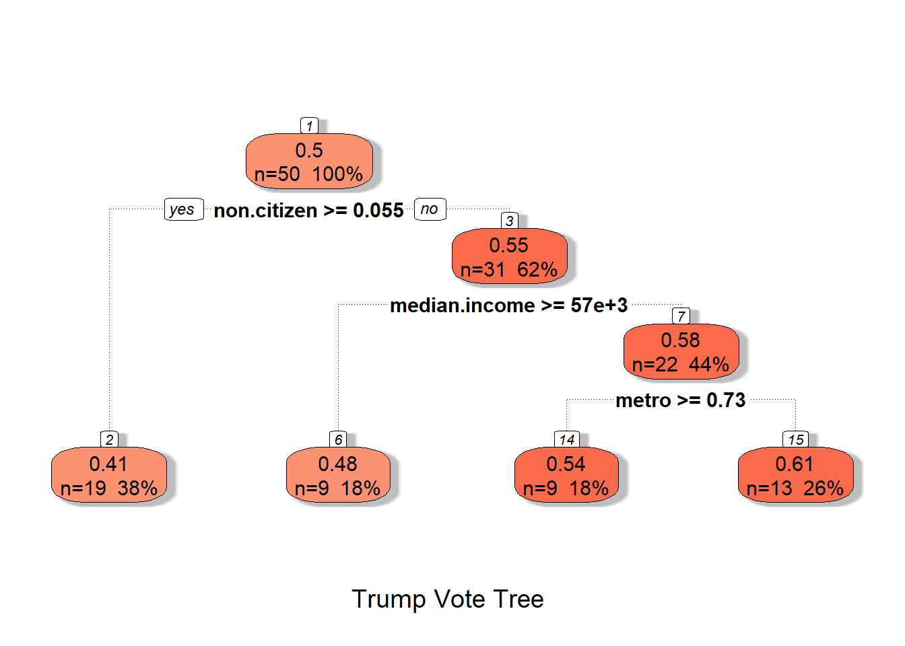
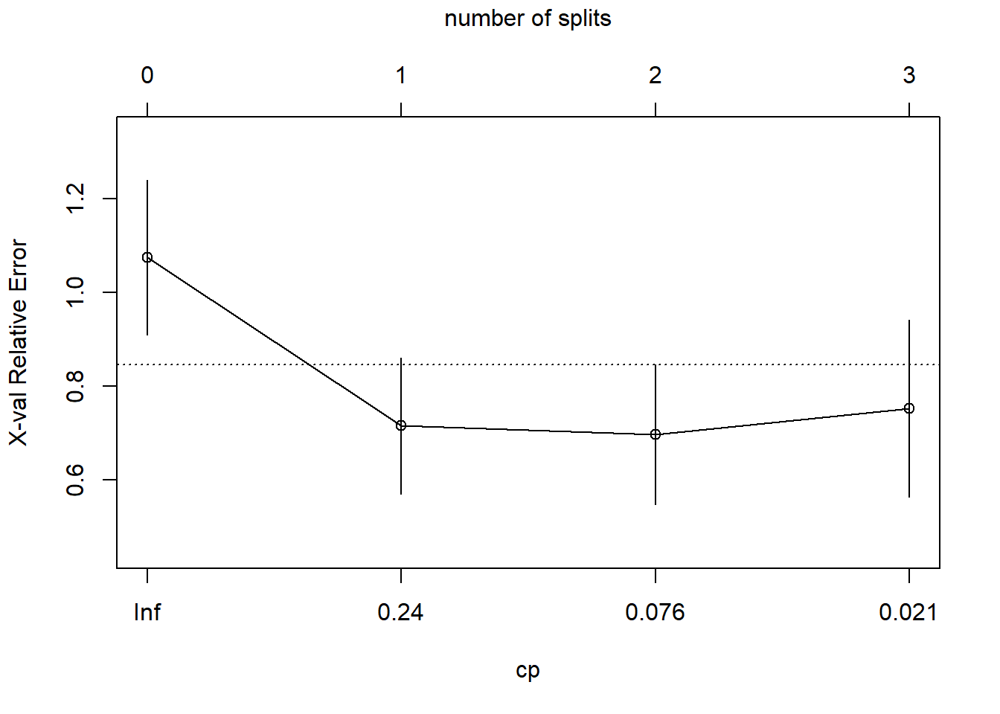
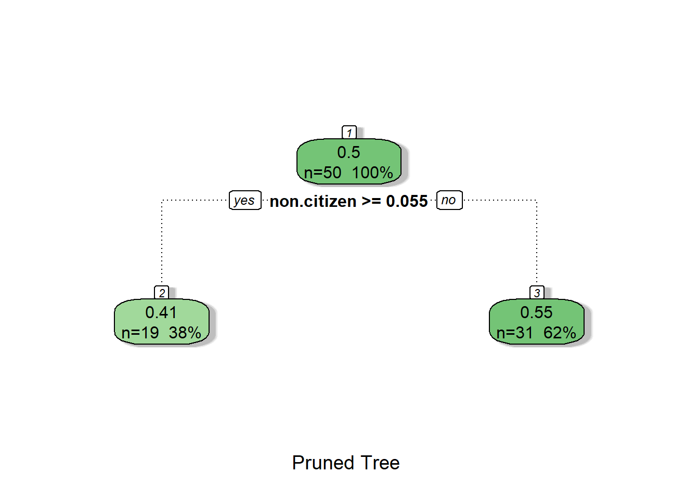
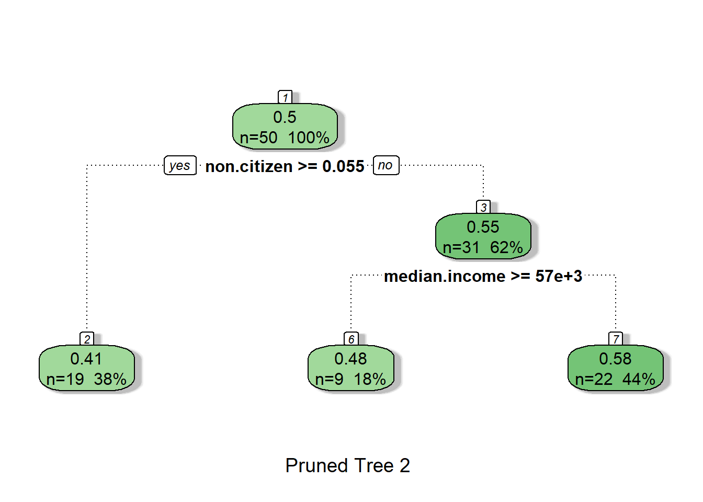

library(tidyverse)
set.seed(71)
df_url="https://raw.githubusercontent.com/jmayberr/math133-stat-learning-fall2026/refs/heads/main/Datasets/election2016.csv"
election2016=read.csv(df_url)
cb_palette <- c(
"#000000", # black
"#E69F00", # orange
"#56B4E9", # sky blue
"#009E73", # bluish green
"#F0E442", # yellow
"#0072B2", # blue
"#D55E00", # vermillion
"#CC79A7" # reddish purple
)Decision Trees of Life
Introduction
The last module provided a brief introduction to unsupervised learning, focusing on principal component analysis (PCA) for dimensionality reduction and clustering techniques for identifying patterns in unlabeled data. While those methods help uncover structure without predefined labels, we now shift our focus back to supervised learning, where models are trained using labeled examples. In this module, we explore a powerful and intuitive class of supervised models based on decision trees. Decision trees form the foundation of many machine learning algorithms, offering a structured way to make predictions by recursively partitioning data based on feature values. We will examine how decision trees operate, their strengths and limitations, and how they serve as the building blocks for more advanced ensemble methods.
As always, we begin by loading necessary shit.
Now we get down to it.
Regression Trees
Decision trees can be used in both classification and regression problems. For this reason, they are often referred to with the acronym CART (Classification And Regression Trees) although RPART (Recursive PARTitioning) is one of the primary R packages to use when building such models. The “C” of CART is more natural to explain from an application perspective, but the “R” part is easier to explain mathematically so we will start with the latter. In contrast to the usual flow of mathematical exposition, we will actually start with an example and then explain how it works. In case you’re not sick of it yet, we’ll be using our favorite election dataset with trump.vote as the response
Pictures speak louder than words so let’s start with a visual. It requires loading three new packages, one which loads the name model building function rpart(), one which just loads the color brewer palettes, and one which loads the aptly named visualization function fancyRpartplot()
library(rpart)
library(RColorBrewer)
library(rattle)
trump_tree=rpart(trump.vote~.,data=election2016[,2:10])
fancyRpartPlot(trump_tree,
palettes = "Reds",
sub = "Trump Vote Tree")
You can also get this information (and more) in a raw form by printing the model output
print(trump_tree)n= 50
node), split, n, deviance, yval
* denotes terminal node
1) root 50 0.49805000 0.4990000
2) non.citizen>=0.055 19 0.07367368 0.4147368 *
3) non.citizen< 0.055 31 0.20678710 0.5506452
6) median.income>=57196 9 0.05688889 0.4788889 *
7) median.income< 57196 22 0.08460000 0.5800000
14) metro>=0.725 9 0.01575556 0.5422222 *
15) metro< 0.725 13 0.04710769 0.6061538 *How do we interpret these results? Let’s start from the top and work our way down. The boxes are called nodes. Our tree has seven of them. The top box is called the root. The segments that connect nodes are called branches1. The places where two branches depart from a node are called splits. The five nodes at the bottom are called terminal nodes or leaves2. All this makes sense based on common knowledge of real world trees (except that these trees are upside down growing from the sky).
Looking from the top-down in our tree, the root node has three numbers in it: 0.5, n=50, and 100%. These represent, respectively, the average trump.vote for all states, the number of states in our dataset, and the percentage of all states being summarized in the root node (all of them). After that node, there is a split with the rule: non.citizen >= 0.055. To the left, it says “Yes” and to the right it says “No”. That means that the node to the left of the split represents all states with at least 5.5% non-citizens. The numbers in the node say that there were n=19 states in this group (38% of all states) and the average trump.vote in these states was 0.41. On the right of the split, is a node for the states which had fewer than 5.5% non-citizens. For these states, the average trump share was 14 points higher (0.55 as opposed to 0.41). States under this node are further split by Median Income with wealthier states to the left and less wealthy states to the right. The dividing line is a median income of 57000. States with a low median income are further broken up by whether they are at least 73% metro or not.
All in all, these splitting end up grouping the states into four categories with increasing levels of redness
- High Non-citizen (Most Blue - 41% trump on average)
- Low Non-citizen, High Median Income (48% Trump vote)
- Low Non-citizen, Low Income, High Metro (54%)
- Low Non-citizen, Low Income, Low Metro (61%)
You can see which states landed in each leaf using the “where” command although the numbers do not exactly match the leaf numbers in the tree3:
#election2016$leaf=trump_tree$where
table(trump_tree$where)
2 4 6 7
19 9 9 13 The states in the predicted “reddest” node are
election2016$state[trump_tree$where==7] [1] "Alabama" "Arkansas" "Idaho" "Kansas"
[5] "Kentucky" "Maine" "Mississippi" "Montana"
[9] "Nebraska" "Oklahoma" "South Dakota" "West Virginia"
[13] "Wyoming" Makes sense4
Now that you know how to read a tree, let’s talk a little bit about how it works. Next class we’ll discuss the corresponding classification problem.
Greedy Trees
The end goal of a tree is to partition the sample into leaves that are as “similar” as possible, kind of like in K-means clustering. The difference between regression trees and K-means is what we mean by “similar”. In K-means (an unsupervised algorithm), “similar” means that the \(x\) values are as close together as possible. In regression trees (a supervised algorithm) we want the \(y\) values to be as close as possible. In other words, we are trying to find a set of \(K\) leaves \(L_1,...,L_K\) which minimizes the sum of squared errors5: \[ SSE =\sum_{j=1}^K \sum_{y_{ij} \in L_j} (y_{ij}-\bar{y}_j)^2 \] where \(\bar{y}_j\) is the mean of all observations in leaf \(j\).
OK, now that we have a preliminary idea of the function we might want to minimize, the next question is how in the world do we search through all possible splits of variables to find this optimal split? Well, you are unlikely to get THE optimal but you could get AN optimal by using what’s called a top-down greedy approach.
In this algorithm, we start by looking at all possible splits of the form \(X_i < x\) where \(X_i\) can be any of our predictors and \(x\) can be any real number (note: if \(X_i\) is categorical instead of continuous, we instead look at all possible splits into subsets of possible values). In the example above, the optimal first split was non.citizen < 0.055. You can see other splits attempted by the algorithm using the “splits” argument of the output
head(trump_tree$splits) count ncat improve index adj
non.citizen 50 1 0.4368823 0.055 0.0000000
median.income 50 1 0.3469531 57196.000 0.0000000
metro 50 1 0.3233172 0.840 0.0000000
white.pov 50 -1 0.2210384 0.105 0.0000000
non.white 50 1 0.1472139 0.215 0.0000000
metro 0 1 0.8600000 0.840 0.6315789Looking at these first five entries, the first is the one used by the tree because it led to the largest improvement in SSE over the root node (the SSE of the root node would be the total sum of squares). The value of improve is the percent change in SSE from the parent node to its children: \[improve = 1 - (SSE_{Children}/SSE_{Parent})\] This statistic is akin to looking at the increase in \(R^2\) when comparing a reduced model (without the split) to a full model (with the split). Splits based on other variables led to smaller improvements, but the values listed under index are the splitting rules that would have been used if that variable was selected. The last entry above for metro is different in that it gives a surrogate split. This means that it is the best substitute for non-citizen in the case of missing data. Its value of improve is instead the level of its agreement with the non.citizen split. So the 0.86 above means that 86% of all states would go in the same split direction if we used metro instead of non-citizen.
Another important output from the rpart function is the cptable:
trump_tree$cptable CP nsplit rel error xerror xstd
1 0.43688228 0 1.0000000 1.0742865 0.1651265
2 0.13110774 1 0.5631177 0.7155531 0.1452760
3 0.04364371 2 0.4320100 0.6967316 0.1494352
4 0.01000000 3 0.3883663 0.7523601 0.1884560The cptable summarizes statistics of the primary splits used in the final tree construction, starting with node 0. The best way to read this table is to pretend you are trying to make a decision on whether or not to make split. For example, in the first row, we are trying to decide if we want to make the first split by non.citizen which we have decided is the best possible split we could make. Then we should interpret the columns as follows:
- CP (complexity parameter): This is the minimum required improvement in SSE to keep the split. In other words, the first split above would lead to a 0.43688228 reduction in relative SSE so we should keep it if that threshold seems acceptable. Otherwise, we shouldn’t make it. The second split would lead to an additional 0.1311 reduction
- nsplit: This is how many splits we have already made
- rel error: This is the current relative error of our tree (SSE/SST).
- xerror: Average relative error obtained from cross-validation (default is to use 10 folds)
- xstd: Standard deviation of xerror from cross-validation.
That description of CP may sound confusing and interestingly I once had a fun and somewhat contentious argument6 with chatGPT about how it is computed in rpart until I realized the best thing to do is just to look at an example. Suppose that we are trying to analyze the first split in our trump tree above. First we compute the SST as a baseline for comparison
SST=sum((election2016$trump.vote-mean(election2016$trump.vote))^2)
SST[1] 0.49805Next, we look at what SSE we would get after the split.
node1=dplyr::filter(election2016,non.citizen>=0.055)
node2=dplyr::filter(election2016,non.citizen<0.055)
SSEn1=sum((node1$trump.vote-mean(node1$trump.vote))^2)
SSEn2=sum((node2$trump.vote-mean(node2$trump.vote))^2)
SSE1=SSEn1+SSEn2
re1=1-SSE1/SST
re1[1] 0.4368823This relative error is the first entry in the cp table.
Now to explain the second cp value, let’s look at the error we would get from splitting node 2 into its potential children
SSEn22=sum((node2$trump.vote-ifelse(node2$median.income>=57196,0.48,0.58))^2)
SSE2=SSEn1+SSEn22
re2=1-SSE2/SST
re2[1] 0.5679677Notice that the difference is the CP:
re2-re1[1] 0.1310854So at the second step, we would keep the split if an improvement of 0.13 seems worth it.
Cp is the most common measure of how much we gain from each split and can be used in “pruning”” back a tree (see below). Note that rpart uses cp=0.01 as one of its stopping rules for when to quit attempting splits: as soon as there are no more splits which gain you more than 1% in relative error, they aren’t worth making according to rpart. The other stopping criteria is based on node sizes: rpart will not attempt a split on a node with fewer than 20 observations. Both of these criteria can be modified with the appropriate arguments in rpart; see the help file for more details.
The fourth and fifth columns give the mean and std of the cross-validation errors from the model fit (using \(K=10\) folds by default). You can plot these to see if it there is any over-fitting going on:
plotcp(trump_tree,upper="splits")
Notice that the trees with one or two splits have a lower cross validation error which suggests we “pruning” may want to avoid overfitting by “pruning back” the tree to one with a larger cp7. The dashed line in the plot shows one SD above the best model and some people prefer to use the simplest model which drops below this line. In our case, that would be the tree with only one split and this tree would correspond to any cp value between 0.43688228 (the first entry in the cp table) and 0.13110774 (the second). The function to obtain pruned trees is aptly named prune.
trump_prune=prune(trump_tree,cp=.4)
fancyRpartPlot(trump_prune,sub="Pruned Tree")
We could also prune to the two split example
trump_prune2=prune(trump_tree,cp=.09)
fancyRpartPlot(trump_prune2,sub="Pruned Tree 2")
or the three, but I think you get the point by now.
Up Next
Trees can also be used for classification problems and we’ll see how next class. In the meantime, if you want some more practice, try a regression tree on the mtcars data using mpg as the outcome (Group work 12).
Footnotes
or as my kids used to say, the “bones” of the tree.↩︎
Guess what my kids called those…↩︎
In fact these numbers, unlike those in the tree, are the actual node numbers from top to bottom, left to right. In the visual, the left and right children of a parent labeled \(n\) are labeled \(2n\) and \(2n+1\). ↩︎
Although Maine is a bit of an outlier because their electoral votes are split.↩︎
This is very similar to what we do in OLS except that here, the predictions are piecewise functions, defined on leaf \(j\) as \(\bar{y}_j\).↩︎
Don’t worry kids, we apologized and made up after.↩︎
Very confusingly, the cp on the x-axis here is not exactly the same as the cp in the table, but is the geometric mean of the last two cp values. Honestly, I don’t really know why.↩︎